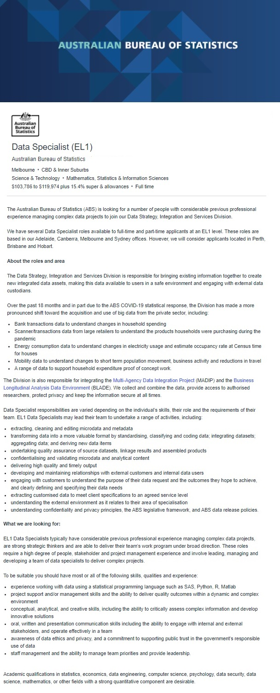

Data Specialist (EL1)
(Note: Job has been delisted, image of job description provided below)
The role is all about data collection and transformation by combining assorted groups of information into new data sets. This role appeals to me because I like to take time to organise things into their respective places and I take a great deal of personal and professional pride in this fact. As a government job, it also offers a lot of stability which is important as I progress my career and wish to start a family. I also have an interest in data analytics and as this role also draws on my previous experience in management, it’s a position I would have some comfort going into.
To do this job well, you would need experience in dealing with various data streams and a developed understanding of the basics of data analysis. You would also need to have experience managing a team successfully, maintaining relations with internal stakeholders, and ensuring good customer relations. Time management skills are crucial for a role like this and being able to manage others’ timelines is just as important. While no degree are specifically required for this position, studies in business, law, IT, or psychology, are viewed favourably.
For this role, I already have many of the necessary skills related to management and teamwork due to a Retail Management background. I can confidently control a large team and present things to customer in a professional manner, as well as report to higher management. I also have strong time management skills and know how to motivate people in a positive way to achieve their own task deadlines.
To pursue this role, I would need to further my education and skillset by completing a degree in either Information Technology or Computer Science, and then through networking and internships, find myself the relevant experience to confidently step into this type of position.
